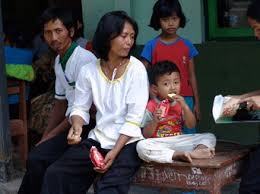
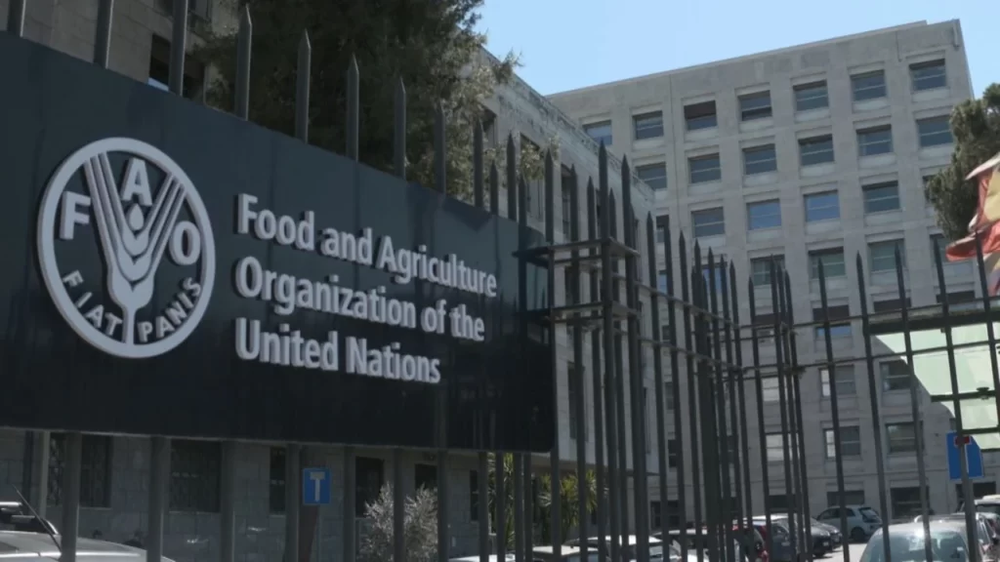
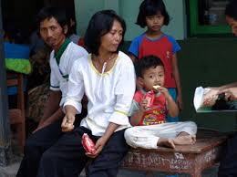
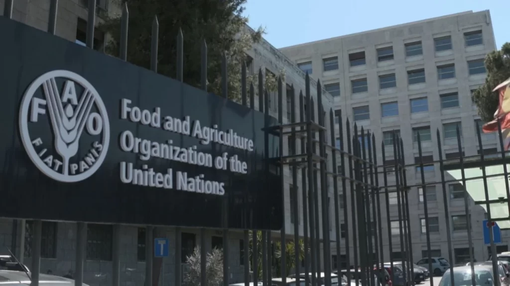

Satu tujuan dari SDGs yang telah saya pilih adalah “Tanpa Kelaparan,†yakni tujuan ke-2. “Menghilangkan Kelaparan, Mencapai Ketahanan Pangan dan Gizi yang Baik, serta Meningkatkan Pertanian Berkelanjutan.†Secara detail, tujuan ini bertujuan untuk menghilangkan kelaparan dan menjamin akses makanan bagi semua orang, khususnya orang miskin dan mereka yang berada dalam kondisi rentan, termasuk bayi, terhadap makanan yang aman, bergizi, dan cukup sepanjang tahun. Tujuan ini juga fokus dalam mewujudkan penggandaan produktivitas pertanian dan pendapatan produsen makanan skala kecil, khususnya perempuan, masyarakat penduduk asli, keluarga petani, penggembala dan nelayan, termasuk melalui akses yang aman dan sama terhadap lahan, sumber daya produktif, dan input lainnya, pengetahuan, jasa keuangan, pasar, dan peluang nilai tambah, dan pekerjaan nonpertanian. Singkatnya, “Tanpa Kelaparan†bertujuan untuk membentuk dunia tanpa kelaparan, mencapai ketahanan pangan, meningkatkan gizi setiap individu, meningkatkan pertanian berkelanjutan, serta mengatasi ketahanan pangan di wilayah terpencil. Sejauh ini, faktor yang dapat berupa menjadi indikator keberhasilan tujuan ini adalah peningkatan akses terhadap makanan bergizi dan aman, penurunan angka kurang bergizi pada wanita hamil dan anak-anak, serta penurunan prevalensi kelaparan di dunia. Tujuan ke-2 merupakan salah satu tujuan terpenting dalam SDGs karena kelaparan dan malnutrisi berdampak langsung pada kualitas hidup, kesehatan, dan pendidikan masyarakat. Dengan mengatasi masalah kelaparan, diharapkan dapat tercapai masyarakat yang lebih sehat, lebih produktif, dan lebih mampu berkontribusi pada pembangunan ekonomi dan sosial.

Salah satu program kerja yang sangat membantu dalam memanifestasikan tujuan ke-2 ini adalah program Pemberian Makanan Tambahan (PMT) di Indonesia untuk ibu hamil dan anak-anak. Indonesia dikenal untuk menyediakan banyak program nasional yang membantu ketahanan pangan, meningkatkan pendidikan gizi sehingga menurunkan tingkat obesitas, dan juga pemberdayaan sumber daya alam dan pertanian lokal.
Dalam program kerja yang bersifat internasional, Indonesia berperan aktif dalam organisasi FAO (Food and Agriculture Organisation) atau Program Pangan Dunia dan WFP (World Food Programme). Kedua organisasi dan program tersebut fokus untuk meningkatkan ketahanan pangan dan mengatasi malnutrisi. Seperti FAO mendukung negara-negara untuk mengembangkan kebijakan ketahanan pangan yang berkelanjutan dan inklusif. Dalam kerjasama ini, Indonesia seringkali menjadi bagian dari proyek bantuan pangan yang dikirimkan oleh WFP untuk negara-negara lain yang menghadapi bencana kelaparan atau kekurangan pangan. Pada FAO, Indonesia berperan untuk mengarahkan kebijakan dan perkembangan sistem pangan global, berbagi pengalaman dalam memperbaiki sistem pertanian dan ketahanan pangan, serta berkolaborasi dengan negara-negara lain untuk merumuskan kebijakan yang lebih efektif.
Karena internasional dan melibatkan berbagai negara sekaligus, kerja sama ini dapat digolongkan dalam kerja sama multilateral. FAO merupakan organisasi yang memiliki anggota hampir semua negara di dunia dengan tujuan yang hasilnya bersifat global. WFP memiliki program yang mencakup banyak negara dan bekerja dengan berbagai organisasi internasional lainnya. Selain itu, FAO dan WFP memiliki tujuan bersama untuk mengatasi masalah / isu global. FAO bertujuan untuk mengakhiri kelaparan dan meningkatkan produksi pangan, WFP memberikan bantuan pangan kepada negara yang sedang menghadapi kelaparan akibat bencana / konflik / kemiskinan. Dengan demikian, hasil dari kerja sama ini juga akan bersifat global. FAO dan WFP juga menyediakan pendanaan dan sumber daya alam yang dapat digunakan untuk memberi negara lain dukungan jika menghadapi kelaparan. Kedua program dan organisasi tersebut juga melibatkan kolaborasi antara negara maju dan negara berkembang. Terakhir, karena meliputi isu kelaparan, masalah tersebut pasti akan memerlukan kerja sama internasional. Masalah kelaparan sudah berlangsung selama ratusan tahun, karena itu cenderung tidak mudah untuk dihilangkan. Jadi tentu saja kedua organisasi tersebut membutuhkan bantuan apa pun yang dapat mereka terima.
Bagi pemerintahan, Indonesia kini memiliki reputasi yang bijak karena dapat membagi pengalaman dalam soal pangan. Ketahanan pangan nasional juga meningkat akibat akses sumber daya dan bantuan internasional dari program dan organisasi FAO dan WFP. Indonesia juga memperoleh bantuan & dukungan teknis dan finansial dalam mengatasi masalah ketahanan pangan. Kualitas pangan dan pertanian meningkat, maka ekonomi negara akan semakin berkembang yang nanti akan menghasilkan tingkat kemiskinan menurun.
Nilai Pancasila yang tercermin pada peran Indonesia dalam kerjasama ini serta tujuan ke-2 secara keseluruhan adalah kemanusiaan yang adil dan beradab karena kedua organisasi tersebut berfokus pada peningkatan kesejahteraan manusia, keadilan sosial, dan penghormatan terhadap hak dasar setiap individu untuk hidup dengan layak, khususnya dalam hal akses terhadap pangan yang cukup. Tidak ada satu orang pun di dunia ini yang pantas mati kelaparan, setiap orang berhak memperoleh dan mengkonsumsi makanan dengan komposisi nutrisi yang lengkap. Nilai kemanusiaan dalam Pancasila menekankan penghormatan terhadap martabat dan hak asasi setiap individu.